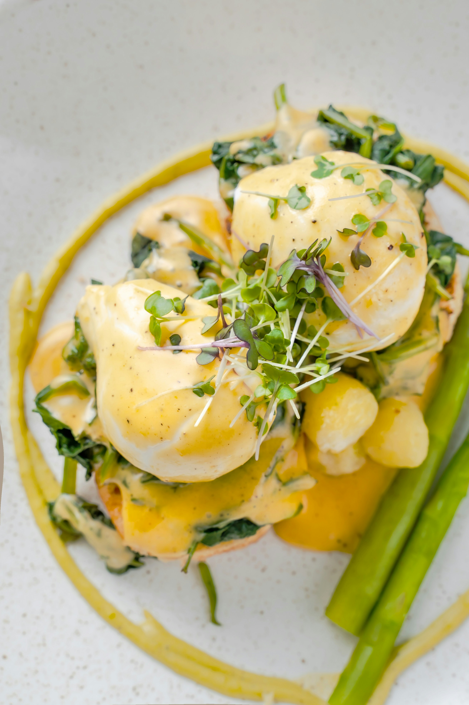

Eggs Benedict is a brunch specialty consisting of hot buttered English muffins, Canadian-style bacon, and poached eggs topped with a rich homemade Hollandaise sauce. Wonderful for Easter, Mother's Day, or brunch anytime! If you're not a lemon fan, start with 1 tablespoon of lemon juice. If you like a tangy Hollandaise, you can add the full amount.
For Hollandaise
For Eggs Benedict